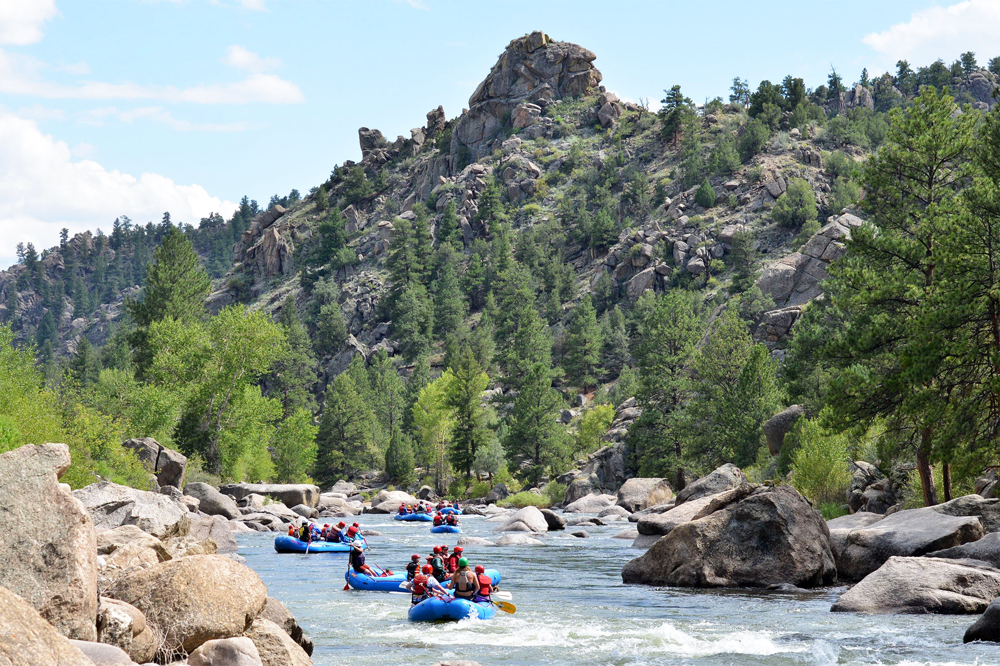
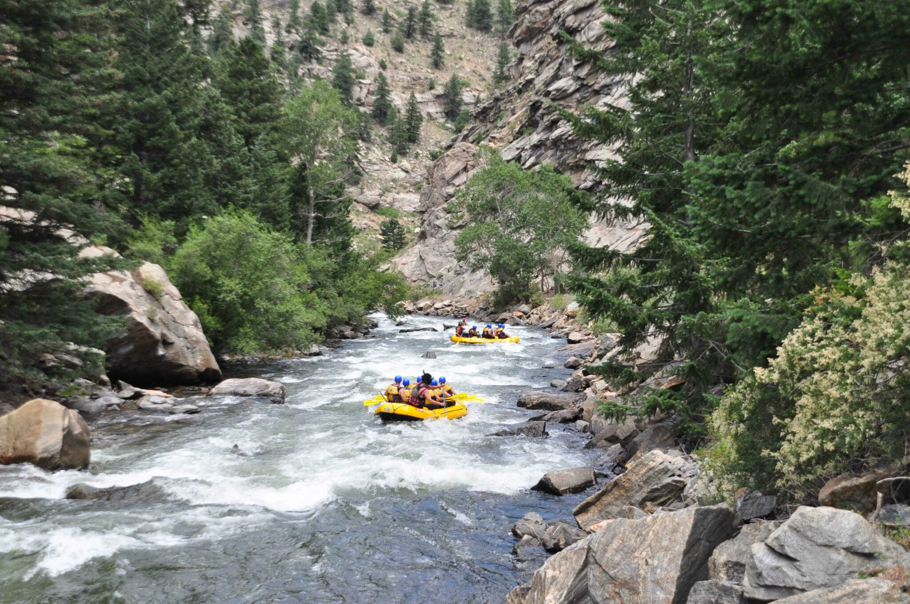
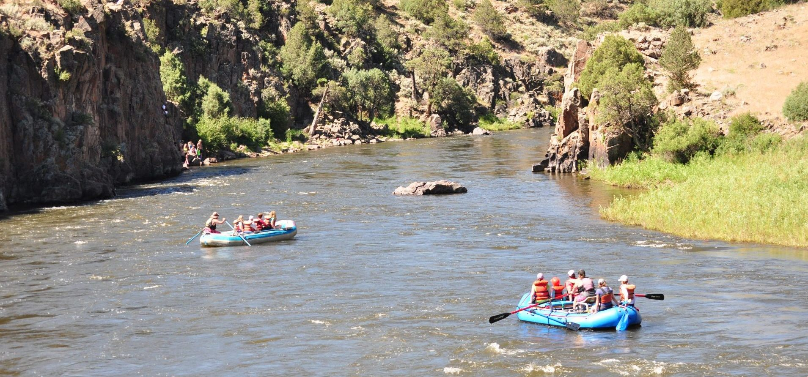

Explore Colorado’s Best Rivers for Whitewater Rafting

Arkansas River
Experience the thrill of Class III to V rapids through the stunning Royal Gorge. This is Colorado’s most iconic rafting destination for both beginners and pros.

Clear Creek
Close to Denver and full of excitement, Clear Creek offers technical rapids, dramatic canyon views, and high adventure just minutes from the city.

Upper Colorado River
Perfect for families and first-timers, this section of the Colorado River offers gentle rapids, calm waters, and breathtaking mountain scenery.
Image Gallery


What People Are Saying
"Rafting in Colorado is more than just a sport—it's a journey through some of the most beautiful landscapes in the West."
– Jordan Mitchell, Outdoor Guide
"Whitewater rafting on the Arkansas River was the highlight of our summer trip. We’re already planning to come back next year!"
– Melissa Thompson, Denver
"Clear Creek gave us an adrenaline rush like no other. The guides were top-notch and made the whole experience safe and fun."
– Carlos Jiménez, Boulder